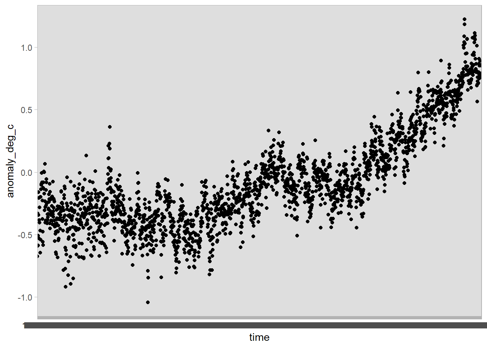

Recreating Ed Hawkins’ Show Your Stripes graphic
ggplot to recreate a classic climate change visualization.
Checks
Clean environment in Rstuido Folder path in Rstudio
Welcome
Hello and welcome to my collection of screencasts. Today we will be recreating a classic climate change visualization, the show your stripes graphic by Ed Hawkins. This graphic shows how the global temperature has increased over time, going from blue to red on the colour scale.
It is a powerful reminder of how our human activity has resulted in climate change.
In this video we’re going to ingest the data into R, do some exploratory analysis, and the recreate the visualization in ggplot.
As usual, if you have any questions about the commands that we are using, please feel free to leave a comment below, or have a look at the accompanying post linked in the description that includes the code used in the analysis which follows.
As you can see, in this post you can click on any of the commands and be taken to their documentation to see which package they are from, and how each command works.
Rstudio
Let’s open up Rstudio now and create a fresh Rmarkdown document.
We can clear out the boilerplate code that is in place to show us how Rmarkdown documents work, and create some scaffolding for our analysis.
We’re going to want to include a section on:
- reading in the data
- some exploratory data analysis
- recreating the figure
- adding interactivity
Data
The original visualization is displayed on a website called ShowYourStripes.info, where you can select different regions to see how they have warmed over time. We’re doing to be looking at the entire globe.
If you click on the FAQ section, we can see that the global data is sourced from the UK’s met office. We can head on over to their website to understand a bit more about the data and download it.
We read that the “Time series are presented as temperature anomalies (deg C) relative to 1961-1990.” This means we aren’t getting an average temperature, but rather the deviation from the average temperature globally in the base period from 1961 to 1990.
We can select the global series at monthly level, and copy the link address so as to read it directly into Rstudio.
The first thing we will do is load the tidyverse meta package.
We can then use the readr package to read in the comma separated value file as a dataframe named df.
If we print the dataframe in the console, we can see that it has four columns and 2,066 rows.
── Attaching packages ─────────────────────────────────────── tidyverse 1.3.2 ──
✔ ggplot2 3.3.6 ✔ purrr 0.3.5
✔ tibble 3.1.8 ✔ dplyr 1.0.10
✔ tidyr 1.2.1 ✔ stringr 1.4.1
✔ readr 2.1.3 ✔ forcats 0.5.2
── Conflicts ────────────────────────────────────────── tidyverse_conflicts() ──
✖ dplyr::filter() masks stats::filter()
✖ dplyr::lag() masks stats::lag()theme_set(theme_light())
df <- readr::read_csv("https://www.metoffice.gov.uk/hadobs/hadcrut5/data/current/analysis/diagnostics/HadCRUT.5.0.1.0.analysis.summary_series.global.monthly.csv")Rows: 2073 Columns: 4
── Column specification ────────────────────────────────────────────────────────
Delimiter: ","
chr (1): Time
dbl (3): Anomaly (deg C), Lower confidence limit (2.5%), Upper confidence li...
ℹ Use `spec()` to retrieve the full column specification for this data.
ℹ Specify the column types or set `show_col_types = FALSE` to quiet this message.If we ask for the column names we can see that they’re a little bit difficult to work with, containing parentheses and percentage signs.
[1] "Time" "Anomaly (deg C)"
[3] "Lower confidence limit (2.5%)" "Upper confidence limit (97.5%)"We can use the janitor package to clean up the names into camel case, where all of the letters are in lower case and words are separated by underscores.
df <- df %>%
janitor::clean_names()
df %>% colnames()[1] "time" "anomaly_deg_c"
[3] "lower_confidence_limit_2_5_percent" "upper_confidence_limit_97_5_percent"Helpfully the janitor command clean names also changes the percentage signs to the word percent.
Let’s now try to get a better feel for the data.
EDA
Let’s begin by looking at the dataset with the skimr package:
| Name | Piped data |
| Number of rows | 2073 |
| Number of columns | 4 |
| _______________________ | |
| Column type frequency: | |
| character | 1 |
| numeric | 3 |
| ________________________ | |
| Group variables | None |
Variable type: character
| skim_variable | n_missing | complete_rate | min | max | empty | n_unique | whitespace |
|---|---|---|---|---|---|---|---|
| time | 0 | 1 | 7 | 7 | 0 | 2073 | 0 |
Variable type: numeric
| skim_variable | n_missing | complete_rate | mean | sd | p0 | p25 | p50 | p75 | p100 | hist |
|---|---|---|---|---|---|---|---|---|---|---|
| anomaly_deg_c | 0 | 1 | -0.08 | 0.39 | -1.04 | -0.35 | -0.16 | 0.11 | 1.22 | ▁▇▅▂▁ |
| lower_confidence_limit_2_5_percent | 0 | 1 | -0.22 | 0.44 | -1.22 | -0.55 | -0.31 | 0.01 | 1.18 | ▁▇▅▂▁ |
| upper_confidence_limit_97_5_percent | 0 | 1 | 0.06 | 0.34 | -0.87 | -0.17 | 0.00 | 0.22 | 1.26 | ▁▇▆▂▁ |
We can see that we have three numeric columns and one character column, time. The data is all complete, with no missing values.
Let’s see if we can plot the data using ggplot.
We use ggplot’s aesthetic mapping here, putting time on the x-axis and the temperature anomaly in degrees Celsius on the y-axis.
df %>%
ggplot(aes(x = time, y = anomaly_deg_c)) +
geom_point()
The x-axis is a bit of a mess! That’s because th time variable is stored as a character, rather than a date:
# A tibble: 2,073 × 1
time
<chr>
1 1850-01
2 1850-02
3 1850-03
4 1850-04
5 1850-05
6 1850-06
7 1850-07
8 1850-08
9 1850-09
10 1850-10
# … with 2,063 more rowsLet’s rather try to change these characters to a date with the help of the lubridate package.
The lubridate command ymd here will parse a date in the form, year, then month, and then day. Because our data comes with just a year and month value, we can paste a string indicating the first of the month with the paste0 command from base R.
Now let us try and plot the data again - using the geom_smooth command to add a smoothed line in top of the points.
df %>%
ggplot(aes(x = time, y = anomaly_deg_c)) +
geom_point() +
geom_smooth() +
geom_hline(yintercept = 0, lty = 2)`geom_smooth()` using method = 'gam' and formula 'y ~ s(x, bs = "cs")'Wow! That’s way better. We also added a dotted line at y = 0 to show use which values are below and above the baseline temperature level.
Recreating the figure
If we want to recreate the figure from Ed Hawkins, we can use the geom_tile geometry in ggplot.
In this case, we are going to map time onto the x-axis, and the deviation from the base temperature to the fill aesthetic. For the y-axis we will just choose an arbitrary constant, in this case 1.
Now we’re getting somewhere, we can see that the colour is lighter to the right of the figure - but we need to improve our colour scale in order to match that of the original graphic.
Let’s add a gradient colour scale with the command scale_fill_gradient2 from ggplot. Here we can specify we want the low values to be blue, the high values red, the mid values white, and the point at which the white is shown as zero.
df %>%
ggplot(aes(x = time, y = 1, fill = anomaly_deg_c)) +
geom_tile() +
scale_fill_gradient2(low = "blue", high = "red", mid = "white", midpoint = 0)That’s great! Let’s now remove some of the superfluous elements and add in some labels.
In this case, we are going to remove the legend as this graphic is more about the message than the actual values.
df %>%
ggplot(aes(x = time, y = 1, fill = anomaly_deg_c)) +
geom_tile() +
scale_fill_gradient2(low = "blue", high = "red", mid = "white", midpoint = 0) +
theme(
legend.position = "none",
panel.grid = element_blank(),
axis.text.y = element_blank(),
axis.ticks.y = element_blank()
) +
labs(
x = "Year",
y = NULL,
caption = "Inspired by Ed Hawkins\nData from the Met Office"
)
Finally, we can remove a bit of the noise in the figure calculating a yearly average from our monthly values. Here we can use the group_by and across function from dplyr.
We create a grouping variable with the lubridate::year command, group by year, and then use the across function to calculate the mean for each year for our three numeric variables.
Next we can reuse the graphics code from above to create a chart that more closely matches the version we saw on showyourstripes.info.
df %>%
ggplot(aes(time, y = 1, fill = anomaly_deg_c)) +
geom_tile() +
scale_fill_gradient2(low = "blue", high = "red", mid = "white", midpoint = 0) +
theme(
legend.position = "none",
panel.grid = element_blank(),
axis.text.y = element_blank(),
axis.ticks.y = element_blank()
) +
labs(
x = "Year",
y = NULL,
caption = "Inspired by Ed Hawkins\nData from the Met Office"
)
Interactive chart
In addition, if we are going to publish our figure online, it might be fun to introduce a bit of interactivity. This is easily accomplished with the ggiraph package.
This package takes static ggplot geometries and makes them interactive such that hovering over the figure shows a data value beside the cursor.
There are three steps:
We modify our graphics code from
geom_tiletogeom_tile_interactiveWe add in an argument for the
tooltipvalue in theggplotaesthetic mappingWe assign our graphics code to an R object and call it from inside the command
ggiraph.
library(ggiraph)
g <- df %>%
ggplot(aes(time, y = 1, fill = anomaly_deg_c, tooltip = anomaly_deg_c)) +
geom_tile_interactive() +
scale_fill_gradient2(low = "blue", high = "red", mid = "white", midpoint = 0) +
theme(
legend.position = "none",
panel.grid = element_blank(),
axis.text.y = element_blank(),
axis.ticks.y = element_blank()
) +
labs(
x = "Year",
y = NULL,
caption = "Inspired by Ed Hawkins\nData from the Met Office"
)
g_out <- ggiraph(ggobj = g)
g_outWe can improve this interactive figure by rounding off the temperature anomaly value, and adding some context to our tooltip:
g <- df %>%
mutate(tooltip = round(anomaly_deg_c, digits = 2),
tooltip = str_c("Degree deviation from base period in ", year, "\n", tooltip, " c")) %>%
ggplot(aes(time, y = 1, fill = anomaly_deg_c, tooltip = tooltip)) +
geom_tile_interactive() +
scale_fill_gradient2(low = "blue", high = "red", mid = "pink", midpoint = 0) +
theme(
legend.position = "none",
panel.grid = element_blank(),
axis.text.y = element_blank(),
axis.ticks.y = element_blank()
) +
labs(
x = "Year",
y = NULL,
caption = "Inspired by Ed Hawkins\nData from the Met Office"
)
g_out <- ggiraph(ggobj = g)
g_outPost script
What about the confidence level?
What about averaging across the year? We can make use of the lubridate package again! This time we use the year function to get the year (as a number) out of the time column.
df %>%
mutate(year = lubridate::year(time)) %>%
group_by(year) %>%
mutate(across(anomaly_deg_c:upper_confidence_limit_97_5_percent, mean)) %>%
ungroup() %>%
distinct(year, .keep_all = T) %>%
ggplot(aes(x = time, ymin = lower_confidence_limit_2_5_percent, ymax = upper_confidence_limit_97_5_percent)) +
geom_ribbon(fill = "grey70") +
geom_line(aes(x = time, y = anomaly_deg_c))We can see that as time goes on, we get better at measuring things with a lower margin of error.
Bars with scale
df %>%
ggplot(aes(time, anomaly_deg_c, fill = anomaly_deg_c)) +
geom_col() +
scale_fill_gradient2(low = "blue", high = "red", mid = "white", midpoint = 0) +
geom_hline(yintercept = 0, lty = 2) +
theme(legend.position = "bottom") +
guides(fill = guide_colorbar(barwidth = 25, barheight = 1, title.position = "top", title.hjust = 0.5))